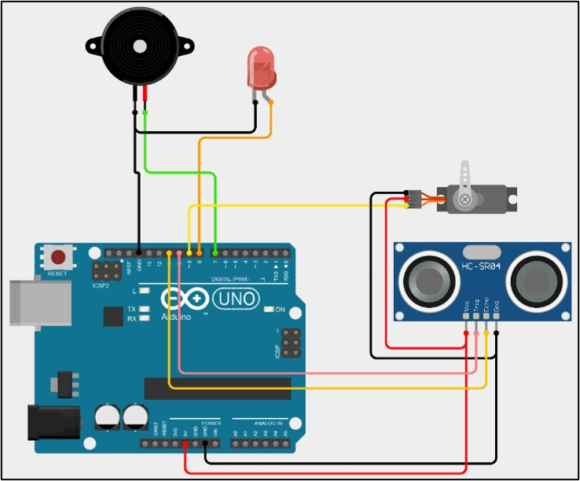
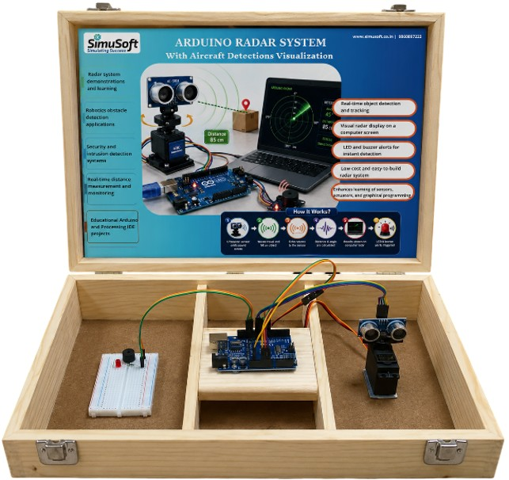
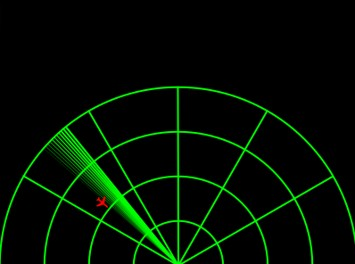

Scan QR for Download Processing IDE

A real-time object detection system developed using Arduino UNO, HC-SR04 Ultrasonic Sensor, Servo Motor and Python. The project scans surrounding objects over a 180° range and displays the detected objects on a radar-like graphical interface.
View RepositoryThe Arduino Radar System is an embedded systems project that simulates the working of a real radar. The ultrasonic sensor is mounted on a servo motor which rotates from 0° to 180°. Distance measurements are transmitted through serial communication to a Python application that displays the scanned area in real time.
Detects nearby obstacles instantly.
Scans a wide area continuously.
Displays a live radar screen.
Arduino communicates directly with Python.
Uses HC-SR04 ultrasonic sensor.
Ideal project for beginners.
| Component | Quantity |
|---|---|
| Arduino UNO | 1 |
| HC-SR04 Ultrasonic Sensor | 1 |
| SG90 Servo Motor | 1 |
| Breadboard | 1 |
| Jumper Wires | Several |
| USB Cable | 1 |
The servo motor rotates from 0° to 180°. At every angle, the ultrasonic sensor sends an ultrasonic pulse and measures the return echo time. Arduino calculates the distance and sends both angle and distance values to the computer. Python reads these values and plots them on a radar interface, creating a live scanning effect similar to an actual radar.



Scan the QR Code below to open the complete GitHub Repository.